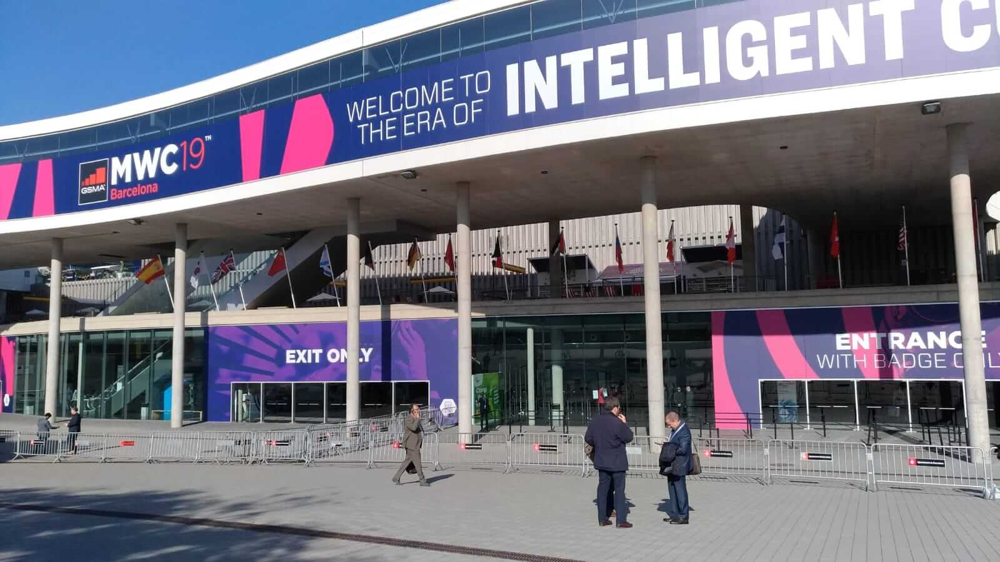
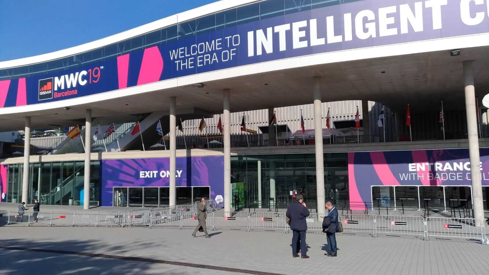

Interview to HUGO MARÇAL | Sendit General Manager
Sendit
Hugo has been with the company since 2007 and is formed in Computer and Informatics
Engineering. He states that what motivates him daily at a professional level is to have the
opportunity of doing the work he likes, embrace challenges out of his comfort zone, work
with an excellent team and contribute decisively to the success of Sendit.
When was Sendit founded, how have been the company’s journey and how is its adaptation
process going within the Go4Mobility and the PDM Group?
“Sendit was founded in 2004. Concerning its journey, we can talk about the before and after
Go4 world, but I think we should focus on the world after Go4. The years of 2017 and 2018
were, absolutely, of adaptation. In each one's mind, there were competing companies and
platforms that have now joined forces to strengthen their market position. The entry into
the group resulted in a natural and positive adjustment, in order to align with the
strategic ideas and objectives of the direction. In practice, the work of fusion continued
in 2018 and consisted, objectively, in the consolidation of companies’ strategies,
standardization of working methods, optimization of processes and definition of a solid path
for the Go4 subgroup.
In fact, it was a year where we were consolidating worlds and cultures and, nowadays, we
already feel part of the group and like we are one.”
What were the most significant changes in the company after joining the PDM Group? What
do you consider to be the advantages of belonging to the Group?
“Belonging to the PDM Group gives us, among other things, a significant competitive
advantage by the possibility of having the technic resources nearby. That is, we do not need
to spend a lot of time on technical recruitment, which in our business is an important
factor. I highlight the excellent collaboration environment that we have found from the
first minute we joined the Group in 2017 and, since then, we feel supported at all levels.
Being present in a Group with the experience, dimension, maturity and quality of PDM is very
important to learn, improve and achieve the objectives in a faster and more effective way.”
How do you describe your team and which skills do you want to develop better in 2019?
"I believe that it may exist a perception that there is a Sendit team and another Go4, but
in reality they are practically one. We share services and departments, such as Marketing
and Finance, we just do not share the commercial and technical teams. The first one due to
strategic orientation and the second one because we work on different technologies. We have
an excellent environment and I can emphasize the mutual help and team spirit. All of us, in
general, get along very well with each other. We accept ourselves even when there are
divergences of opinion or method. We end up talking and, through constructive criticism, we
“guide our boat to good port.
I consider that we have to improve the internal communication. That is to say, we talk to
each other and we are very much in tune, but many times, it happens only between closed
groups (heads, operatives, technical teams) and if the decisions are not communicated in a
correct and linear way, it leads to misunderstandings. This is a clear example of a positive
situation that becomes negative because of the misperception of communication, by those who
did not participate actively in the decision process. Consequently, it is a challenge that
we have been working on. When we make decisions, they should be reported to the teams in a
coherent, clear and objective way, so that there are no doubts or questions remaining.”


 
